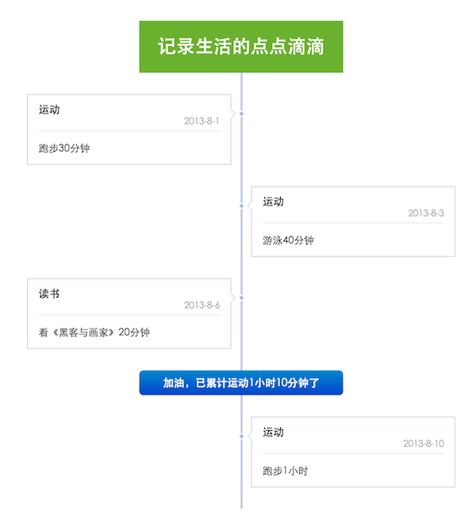

time_line
组件有问题？旺旺联系作者：
View352
kissy版本1.4.X
综述
Time_line是一个根据给定数据自动生成Time_line布局的高度自定义组件。
- Author: 跑猪
快速使用
S.use('kg/timeline/2.0.0/index', function (S, Time_line) {
var timeline = new Time_line('#id',data [,opt]);
})
API说明
Time_line类接受三个参数。例如 new Time_line('#id',data [,opt])
参数一：容器
第一个参数是组件容器选择符，例如#id，其他方式详见http://docs.kissyui.com/docs/html/api/core/dom/selector.html
参数二：数据项说明
第二个参数是一个数组，数组中每项存储一个对象，对象属性说明如下：
| 属性名 | 类型 | 默认值 | 描述 |
|---|---|---|---|
| template | String | “fb” | 该条数据对应的html模板名 |
| pos | Enum("left","right","center") | 自动计算(左右交替) | 该条数据的位置，"left","right","center" |
| xxx | 自定义属性 | ||
| yyy | 自定义属性 | ||
| … | 可根据自己条目html模板结构，添加自定义属性 |
参数三：配置项说明
| 参数名 | 类型 | 默认值 | 描述 |
|---|---|---|---|
| html_template | Array | [fb] | 条目html模板 |
| start_pos | Enum("left","right","center") | "left" | 首条目的位置 |
| container_width | Number | 600 | timeline容器的宽度 |
| line_width | Number | 28 | 中间时间轴的宽度 |
| item_gap_space | Number | 30 | 各条目之间的间距 |
| top_gap_space | Number | 15 | 首条目与容器间距 |
| bottom_gap_space | Number | 15 | 末条目与容器间距 |
PS：以上宽度、间距单位都为px。
模板样式
时间线样式
中间的时间线是一个div：<div class="tl-line"></div> ，请根据自己需要，为其添加css样式，例如：
.tl-line{
background:#aabbcc;
}
如果你想使用组件里默认时间线样式，手动引入“timeline_fb.css”即可。
条目模板
组件里带一个默认模板“fb”，其html结构如下。如果需要使用该模板，需要手动引入“timeline_fb.css”
<div class='fb-block'>
<div class='fb-title'><h1>{title}</h1><h2>{date}</h2></div>"
<div class='fb-content'><p>{content}</p></div>"
</div>"
<i class='fb-{pos}-pointer'></i>";`
PS：模板里{xxx}的内容，与数据项中xxx属性所对应，生成html时，{xxx}会被数据项xxx属性值所替换。
使用示例
代码
<!doctype html>
<html>
<head>
<meta charset="utf-8"/>
<title>timeline的demo</title>
<script src="http://g.tbcdn.cn/kissy/k/1.3.0/kissy-min.js" charset="utf-8"></script>
<!-- 引入自带的fb模板 -->
<link rel="stylesheet" href="./timeline_fb.css">
<!-- 为自定义模板 定义样式 -->
<style>
.blue_mark {
background-image: -webkit-gradient(linear,0 0,0 2.0.0%,from(#08c),to(#04c));
border-radius: 6px;
text-align: center;
}
.blue_mark h1{
font-size: 15px;
color: #fff;
padding: 10px;
margin: 0px;
}
.green_mark{
color: #fff;
text-align:center;
font-size: 13px;
padding: 6px 0;
background: #6bb2.0.0;
}
</style>
</head>
<body>
<h2>Time_line的demo</h2>
<!-- timeline 容器-->
<div id="container" style="margin:0 auto"></div>
<script>
KISSY.use('kg/timeline/2.0.0/index', function (S, Time_line) {
var test_data = [{
"template": "start_temp",
"content": "记录生活的点点滴滴"
}, {
"date": "2013-8-1",
"title": "运动",
"content": "跑步30分钟"
},{
"date": "2013-8-3",
"title": "运动",
"content": "游泳40分钟"
},{
"date": "2013-8-6",
"title": "读书",
"content": "看《黑客与画家》20分钟",
},{
"template": "mark_temp",
"pos": "center",
"summarize": "加油，已累计运动1小时10分钟了",
},{
"date": "2013-8-10",
"pos" : "right",
"title": "运动",
"content": "跑步1小时"
}];
new Time_line("#container",test_data,{
start_pos: "center",
html_template:{
"start_temp": "<div class='green_mark'><h1>{content}</h1></div>",
"mark_temp": "<div class='blue_mark'><h1>{summarize}</h1></div>"
},
top_gap_space:0,
bottom_gap_space:30,
});
})
</script>
</body>
</html>
效果
